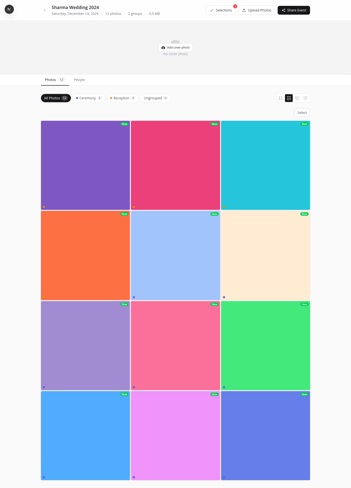
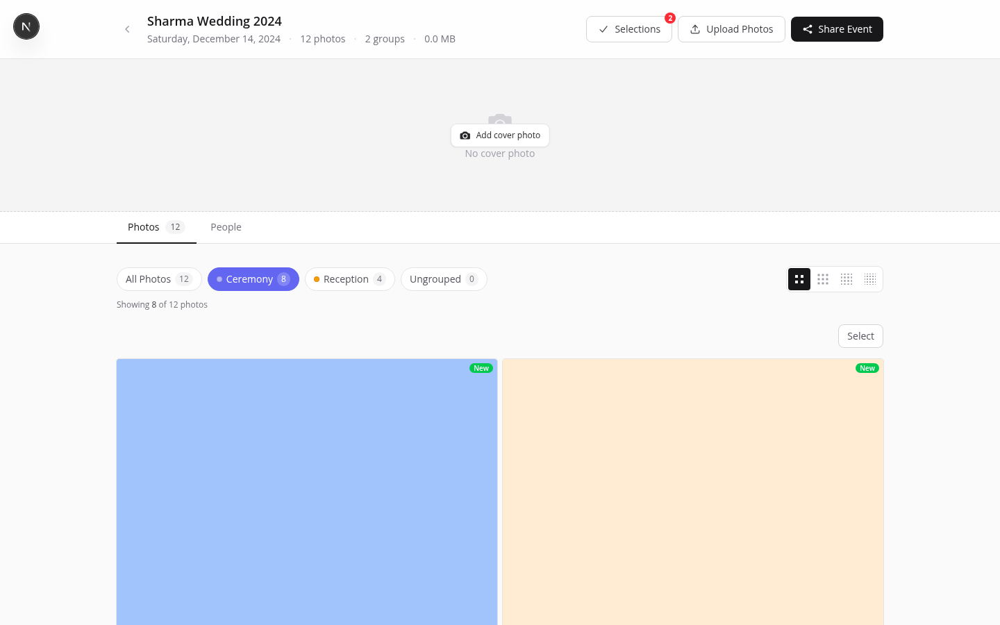

What is an Event?
In PhotoHouse, an event represents a single photography job or shoot. All photos from that job live inside the event, and clients access those photos through a share link tied to that event.
Real-world examples
- Wedding — one event for the entire day. Use groups (Ceremony, Reception, Portraits, Candids) to divide the gallery by section.
- Corporate headshots — one event per company or shoot date. Share a password-protected link with the HR team.
- Portrait session — one event per family or individual. A single PIN protects the gallery.
- Multi-day festival — one event per day, or one event with date-based groups for the whole festival.
Each event can have multiple share links — useful when sending different group subsets to different people, or when you want separate access credentials for the couple and their parents.
Creating an Event
From the dashboard, click + New Event. The creation modal takes three fields:
- Title — the shoot name. Clients see this in the gallery header. Use a specific, searchable name: "Patel Wedding — December 2024" is better than "Wedding".
- Date — the shoot date. Displayed in the gallery and used to sort events on your dashboard (newest first by default).
- Description (optional) — a short internal note. Not shown to clients unless you choose to include it.

Free accounts can hold up to 3 events. Pro allows 25. Studio is unlimited. Once you hit the limit, the + New Event button is disabled until you upgrade or delete an old event.
The Event Page Overview
After creating an event (or clicking one on the dashboard), you land on the event detail page. This is where you manage everything for a shoot.

Header
The event header shows the event title, shoot date, total photo count, total storage used by this event, and three action buttons:
- Selections — navigates to the client selections page. A red badge shows the count of unreviewed submissions.
- Upload Photos — opens the upload modal.
- Share Event — opens the share link manager.
Tabs
Three tabs organise the event content:
- Photos — the main photo grid with group filter pills and density controls. This is where you'll spend most of your time.
- People — face detection clusters. Available after enabling Face Search for the event.
Photo Groups
Groups divide an event's photos into named sections. Once groups exist, filter pills appear above the photo grid so you (and your clients) can view just one section at a time.

Creating a group
- Open the Group Manager
Click the groups icon or "Manage Groups" button in the event toolbar.
- Click "Add group"
Enter a name and pick a colour. The colour is used for the filter pill in both your view and the client gallery.
- Save
The new group immediately appears as a filter pill above the photo grid.
Assigning photos during upload
In the Upload modal, choose a group from the Add to group dropdown before clicking Upload. Every file in that batch is automatically assigned to the selected group when the upload completes.
Bulk reassigning after upload
In the photo grid, enter selection mode (click the checkbox icon or press S), select one or more photos, then use the Assign Group action in the toolbar that appears at the bottom of the screen.
Groups are a great way to handle multi-day events like weddings. Create "Day 1 — Ceremony", "Day 2 — Reception" groups and clients can browse just the section they care about — rather than scrolling through 800 photos to find the reception shots.
Hiding a group
Toggle the visibility switch on a group to hide it from clients without deleting it. Hidden groups still appear in your photographer view with a strikethrough label and an eye-slash icon, so you always know what's hidden.
Grid View Options
The density control (top-right of the photo grid) switches between four layout modes. Your choice is saved in the browser, so it persists between page loads.


The four options and when to use them:
- Comfortable — 2 columns. Best when reviewing image quality or checking focus on individual shots.
- Default — 3 columns. A balanced view for most events during normal editing workflow.
- Compact — 4 columns. Good for medium-to-large events (200–600 photos) where you still want readable thumbnails.
- Dense — 6 columns. Maximum density for culling hundreds of photos quickly — you can see an entire 500-photo event in a few scrolls.
Deleting an Event
To delete an event, open it and click the ⋯ More menu in the event header, then select Delete Event. You'll be asked to confirm by typing the event name.
Deletion removes all photos from S3, all photo groups, all share links (client gallery URLs immediately stop working), and all client photo selections for that event. Download any photos you want to keep before deleting.
Alternatives to deletion
If you simply want to stop clients from accessing the gallery, revoke the share link instead of deleting the event. The photos stay in PhotoHouse and you can create a new link later. This is the safer option when a project is complete but you may need to revisit it.